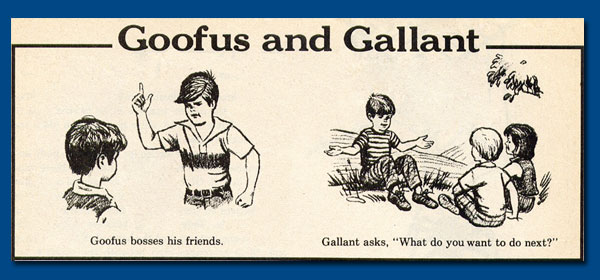

Good Practices for WebApp Development
Goofus v. Gallant
Created by Chris Wheeler
What is this?
Code Review is great, but is not an always ideal time for discussion
- Deadlines
- Waiting on people
- Fisheye is weird
Maybe we can start talking about standards
What this isn't
I'm not telling anyone they're bad (right now)
Goofus Examples:
- Examples help illustrate points
- Concrete examples are fun to discuss
- I'm not here to present perfect code
- Pissing on straw men is fun
QUESTIONS ARE WELCOME
Introductions
(goofus has cooler hair)
Introductions
Goofus
- Thinks "If it works, we ship it, NOW!"
- "I'm more valuable if I'm the only one who understands" and I definitely understand it... mostly
-
once wrote
/(\d+(?:[.,]\d+)?)\s*[xX*/\\]\s*(\d+(?:[.,]\d+)?)(?:\s*[xX*/\\]\s*(\d+(?:[.,]\d+)?))?/to identify a N x M matrix
-
Loves really
super
clever
code
Introductions
Gallant
- Wants to make sure his code works
- "Everyone should be on the same page"
- Is ok with writing extra lines of code if it means better readability (and maintainability)
- Has perhaps an unhealthy obsession with HTML5 Doctor has recently learned that this is not what people mean when they talk about playing doctor on a related note: has recently stopped inviting people into secluded rooms to play doctor
1: Write What You Mean
Hacking is fast (and fun) but really hard to maintain
You might not always get bit, but no one should be surprised when you do
You're usually not the one who will be fixing your code
Goofus
function showMessage(aMessage){
//Show a message in the message div
}
Goofus
function showMessage(aMessage){
$('div.message').html(aMessage)
}
What about custom markup?
Taken care of!
What about security?
Goofus
function showMessage(aMessage){
$('div.message').html(aMessage.replace(/<script .*/,'UNSAFE'))
}
Translations?
Goofus
function showMessage(aMessage){
$('div.message').html(aMessage.replace(/<script .*/,'UNSAFE'))
.each(function(){
this.nodeValue=translate(aMessage);
//SAFE
}
);
}
I found this in real code
Gallant
function showMessage(aMessage){
//Show a message in the message div
}
Gallant
function showMessage(aMessage){
$('div.message').text(aMessage)
}
What about custom markup?
What kind of custom markup?
We want to style things differently
Gallant
What do I really want here?
//an optional class will allow us to manage some new styling
function showMessage(aMessage, anOptionalStyle){
//Well, custom styling means we might want a new element
var element = $('<p />')
.addClass(anOptionalStyle)
.text(aMessage);
//Once I have built it, now I add it.
$('div.message')
.empty()
.append(element);
}
Ok, that works, what about translations?
Gallant
Well that's simple enough
function showMessage(aMessage, anOptionalStyle){
var translatedMessage = translate(aMessage);
var element = $('<p />')
.addClass(anOptionalStyle)
.text(translatedMessage);
$('div.message')
.empty()
.append(element);
}
Writing What you mean:
- Don't get ahead of yourself
- Make sure you understand the libraries you're working with
- Ask yourself, "What's really happening here?"
- Try to write code that shows your process step-by-step
2: Things Have Purposes
The W3C is comprised of a bunch of smart people
DON'T FIGHT THEM
- DOM is for data that the user interacts with
- HTML Elements have semantic meaning
- CSS is for the presentation of data
- Javascript mediates the interactions between user and data
Goofus:
knows that tables are bad, but why?
|
|
Home | Albums | Widgets | Phones | Help |
Throw some jQuery magic in there
$('table.goofus_table td:contains("Albums")').popup(albumPopupContent);
Then some more
$('table.goofus_table td:contains("Widgets")').popup(widgetsPopupContent);
Goofus:
|
|
Home | Albums | Widgets | Phones | Help |
$('table.goofus_table td:contains("Albums")').popup(albumPopupContent);
$('table.goofus_table td:contains("Widgets")').popup(widgetsPopupContent);
$('table.goofus_table td:contains("Phones")').popup(phonesPopupContent);
$('table.goofus_table td:contains("Help")').popup(helpContent);
Maybe some event handling
$('.popup_content').live('click',function(event){
var id= $('table.goofus_menu').attr('data-id'),
popupClicked= $(event.target).text();
showContent(popupClicked,id);
$('html').attr('data-activePopup',popupClicked);
});
Goofus:
|
|
Home | Albums | Widgets | Phones | Help |
$('table.goofus_table td:contains("Albums")').popup(albumPopupContent);
$('table.goofus_table td:contains("Widgets")').popup(widgetsPopupContent);
$('table.goofus_table td:contains("Phones")').popup(phonesPopupContent);
$('table.goofus_table td:contains("Help")').popup(helpContent);
$('.popup_content').live('click',function(event){
var id= $('table.goofus_menu').attr('data-id'),
popupClicked= $(event.target).text();
showContent(popupClicked,id);
$('html').attr('data-activePopup',popupClicked);
});
This is a lot of code
it performs a very common task
and it involves a table tag *shudder*Gallant:
Searches for standards
Menu Tag!
All with Markup and CSS
Gallant:
Code comes out nicer too
$('menu.gallant_menu').on('click','menu.submenu>li',function(){
var value = $(this).attr('data-value');
if(value) doSomething(value);
});
Data Storage: Things to consider
What is it for?
- Is it something the user should interact with? Forms+Inputs
- Is it just for a click action? Button value
- Just needs persistance? localStorage , WebSQL , IndexedDB
- The DOM is the slowest part of any web application
- Think about where you're storing your data and why.
3: Write Better Javascript
Lots of things to learn
- Prototypal inheritance
- Functions as objects
- Objects as maps
- Context management
- Dynamic scoping
This will take a while
In The Mean Time:
Use JSHint
Good habits before you understand
Browser optimized-code
Pain In The Ass
U Mad? Go read about it
Javascript Tips:
Objects are dictionaries: don't forget it
Forget about if statements
function routeMe(routeName){
if(routeName === 'route1') route1();
if(routeName === 'route2' && today === 'Wednesday') route2();
if(routeName === 'route3') messages.push('Tried to go to route 3')
if(routeName === 'route4') alert('How many examples do you people need?');
}
The "C" and "V" keys on Goofus's keyboard are worn out
Javascript Tips:
Objects are dictionaries
Key/Value stores are great!
var routes={
'route1' : route1,
'route2' : function(){
return today==='Wednesday' ? route2() : undefined;
},
'route3' : messages.push,
'route4' : function(){
console.warn('Seriously, it's a straight-forward enough thing');
}
}
function routeMe(routeName){
routes[routeName]();
}
Javascript Tips: Objects
Free high-speed reflection
var validations={
'You gave love a bad name' : love.value < 0,
'That address is unknown' : !address,
"Your cheatin' heart done me wrong" : lover.lovers.length > 1 && !poly,
"It's too late to apologize" : newLovers.length > 0
}
for(var message in validations){
if(validations[message]) showMessage(message);
}
Javascript Tips:
Falsiness
It's weird but you'll like it
function callHandler(aRouter){
//Goofus just trusts his data
aRouter.handler();
//And will probably have to deal with a runtime exception
}
function callHandler(aRouter){
//Gallant knows better
(aRouter || {handler:function(){}})();
}
Javascript Tips: Falsiness
There are so many uses
myName = myName || defaultName;
prompt = messages.length ? 'Too many messages' : 'Not Enough Messages';
function isValid(){
return this.value && this.value >0
}
while(counter){
if(incrementState())
counter++;
else
counter--;
}
Stop creating flags
Let your data decide
Javascript Tips: Scope
Learn to use scopes to your advantage
Goofus javascript is the past
var Vehicle = function Vehicle() {
Vehicle.prototype.wheelCount = 4;
Vehicle.prototype.isTotallyAZipcar = false;
Vehicle.prototype.__validate = function(){
return this.wheelCount>3;
};
Vehicle.prototype.save=function(){
if(this.__validate()) sendToServer(this);
}
}
var vehicle = new Vehicle();
Scope gives us access control
Javascript Tips: Scope
Done right, scope provides concealment and easy access
function validate(anObject){
return anObject && anObject.wheelCount > 3
}
var Vehicle = Backbone.Model.extend({
'wheelCount' : 4,
'isTotallyAZipcar' : false;
save : function(){
if(validate(this)) sendToServer(this);
}
});
Concise and Expressive APIs
Javascript Tips:
Libraries
They're a lexicon Learn the vocabulary
Use them, or you'll write them yourself
Javascript Tips: Libraries
All have their own functions
- jQuery : DOM Manipulation , Cross Browser Compatibiilty , Crap at everyting else
- Underscore/Lodash : Standard library for the web , Every simple loop , optimized
- RequireJS : Organizes your dependencies , won't structure your project
- Backbone : Stops you from writing code without a framework
Knowing them well will make you a better engineer